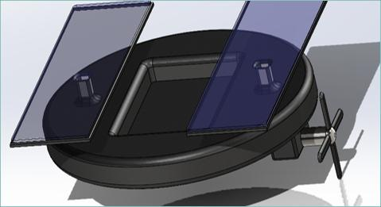
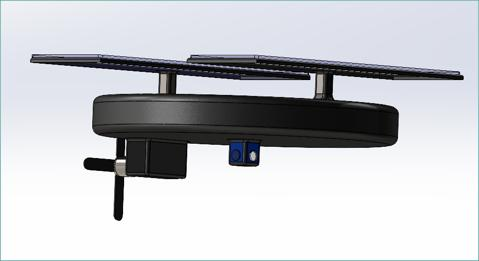

Cyanobacteria Detection & Mitigation Rover
Engineering Design Project · ENGG*3100 · Six-person team
Created the SolidWorks model and evaluated materials and lifecycle costs for a solar-powered cyanobacteria monitoring and treatment concept.
- SolidWorks
- Systems design
- Material selection
- Lifecycle costing
- Engineering economics
- Technical documentation
The model I created
Two views of my SolidWorks model, reproduced from our team’s final design report.
{kind=link}

{kind=link}

The problem
Our team developed the Blue-Green Rover concept for Three Mile Lake in Muskoka, where harmful algal blooms affect recreational use and the surrounding community. The goal was to combine on-water monitoring with a proposed treatment response while reducing manual intervention.
The proposed design
The report describes a solar-powered floating device with a chlorophyll-a fluorometer for monitoring, ultrasonic emitters for proposed treatment, and autonomous navigation. Its HDPE body was specified at 4 m in diameter and 0.5 m in height, with onboard electronics protected inside the device.
My contribution
- SolidWorks modelling: Created the physical model shown in the report, visualizing the rover’s body and component arrangement.
- Physical design and materials: Contributed material calculations and evaluated the body design against buoyancy, durability, and environmental constraints.
- Lifecycle and cost analysis: Developed the economic design justification, including component costs, operating estimates, expected lifespans, and replacement schedules.
- Project communication: Contributed the project-management section and helped organize the team’s final presentation.
What I took from it
I learned that making a concept look workable in CAD is only one part of an engineering design. The material and lifecycle calculations forced me to think about what the design would cost, how it would be maintained, and whether the physical choices still made sense once those practical constraints were included.
Project scope
This was a six-person academic design study rather than a built and field-tested product. The SolidWorks model shown here was created by me, while the overall rover concept was developed by the team. Treatment effectiveness, autonomous navigation, and operation in real lake conditions would require prototype testing and validation.